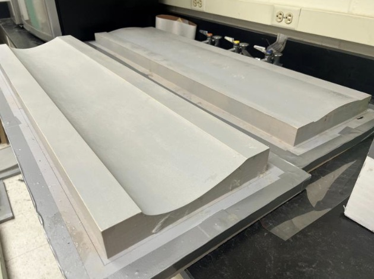
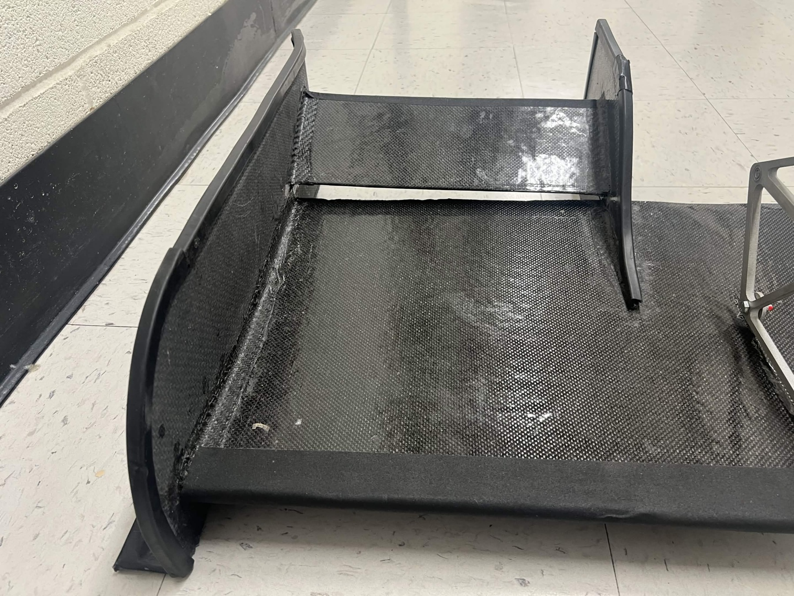

Front wing
I split the main element to spread the aerodynamic loading across four elements, and changed the profiles from NACA 8412 to Eppler 423. I then swept the angles, chords, gaps, and overlaps because changing one element also changes the flow reaching the next. Curved footplates helped control the vortex along the outer edge and preserve suction beneath the wing. See the front-wing decisions and CFD results.

Sidepods and bodywork
I worked on the nosecone, bodywork around the electrical housing, and sidepod ducting. For cooling, I considered how the duct delivers air to the radiator: abrupt turns and area changes can separate the flow and waste the pressure available to drive it through the core. I also considered the external shape, since air diverted around the sidepod continues toward the rear of the car.
Composite manufacturing
I lead wet layups for airfoils, side diffusers, and the floor, and repair delaminated parts. The airfoil construction uses machined clamshell molds, carbon-fiber skins, foam cores, and printed trailing edges. The molds control the outer profile; the core separates and supports the skins; the printed pieces define the thin trailing-edge geometry. Each part has to hold the aerodynamic shape once it leaves the mold.


Choosing the next iteration
I use the car-level aerodynamic balance to decide which front-wing changes are worth pursuing. The September half-car result put 61.04% of the downforce at the front, above the 50 ± 5% target. That made reducing front loading and improving rear-wing flow more useful directions than continuing to maximize isolated front-wing downforce.